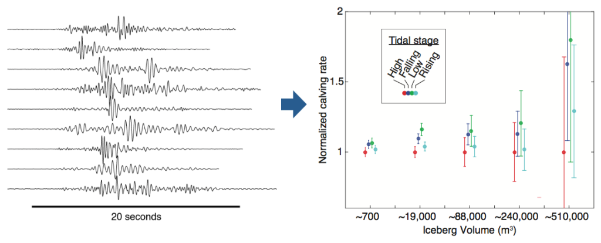

Tim will be attending the 2015 Earthscope National Meeting in Stowe, VT, to deliver a plenary talk on the use of seismology and GPS to learn about glacier dynamics. This talk, on June 15th, will cover some of the projects Tim has been involved with in Alaska to understand subglacial hydrology, fast glacier flow, and iceberg calving, as well as future opportunities in Alaska and Greenland.
The meeting, from June 15-17, will broadly be discussing Earth's deformation in North America and beyond, and the future of the Earthscope project.


The extended abstract for my presentation is below.
Understanding the Processes Driving Glacier Change with Alaskan Seismic and GPS Data
Timothy C. Bartholomaus, Christopher F. Larsen, Michael E. West, Shad O’Neel, Ginny Catania
Worldwide, glaciers and ice sheets are losing mass and increasing global sea level (Shepherd and others, 2012; Gardner and others, 2013). However, the processes controlling these changes are not well understood. Changes in glacier hydrology and iceberg calving can both increase rates of glacier flow, thereby hastening delivering of ice to the ocean and low elevation regions. The understanding of these two processes is not yet sufficient to reliably include them in ice flow models for the prediction of sea level rise.
The application of seismology and GPS techniques within glaciology allows insight into glacier hydrology and iceberg calving processes. At Yahtse Glacier, a tidewater glacier in Alaska, we seismically quantified calving at unprecedented tidal to seasonal timescales. Tracking of calving-generated icequakes reveals that calving of large icebergs is significantly more likely to occur during falling and low tides than during rising and high tides. We also observe that calving fluxes are greater during the late summer and fall than during winter, suggesting that, on the coast of Alaska, submarine melt of glacier termini is likely a dominant control on the calving rate (Bartholomaus and others, 2013). Background seismic noise (i.e., tremor) also offers glaciological insight. Tremor amplitude rises and falls seasonally and after storms, synchronously with subglacial discharge. Thus, subglacial discharge variations can be quantified at tidewater locations where discharge has been previously unknown.
At Yahtse Glacier and Kennicott Glacier, also in Alaska, we use GPS to observe contrasting responses in glacier motion to melt, rain, and lake-drainage events (Bartholomaus and others, 2008). At Kennicott, speedup responses are short-lived and glacier motion quickly returns to background levels. Yahtse Glacier’s response to hydrologic events is long-lived and leads to progressively slower flow over the course of the summer, demonstrating that in some cases changes in subglacial water routing are not reversible on daily to weekly timescales.
Together, seismic and GPS data offer views of glacier responses to environmental change with temporal resolution that is not available through approximately weekly satellite images. These highly resolved observations allow physical insight that improves our understanding of glacier physics, eventually allowing for better inclusion of glacier dynamical processes in ice flow models. Going forward, Earthscope’s Transportable Array in Alaska expands on the present opportunity to remotely track iceberg calving across coastal Alaska. New terrestrial radar interferometers offer a more complete view of ice flow variability by combining the spatial resolution of satellite imagery with the temporal resolution of GPS.